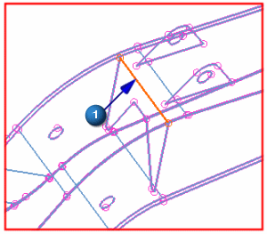
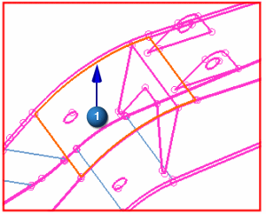
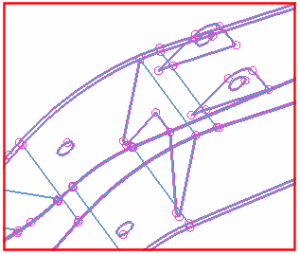

Stitch the first rib to the top
Stitch the top edge of the boom rib to the boom top.
 Stitch Edge (Home tab→Polygon Geometry group)
Stitch Edge (Home tab→Polygon Geometry group)
-
Method
-
Manual

-
Geometry To Stitch
Edge to Face
-



-
Target Geometry
-
 (Select Face)
(Select Face)
-
the face on the BOOM_TOP component that is near the top of the rib

-
Apply
-
The edge of the rib is now stitched to the face. The purple line, which indicates a free edge, is now a solid blue line. This shows that the edges are stitched.

-
Leave the Stitch Edge dialog box open for the next step.